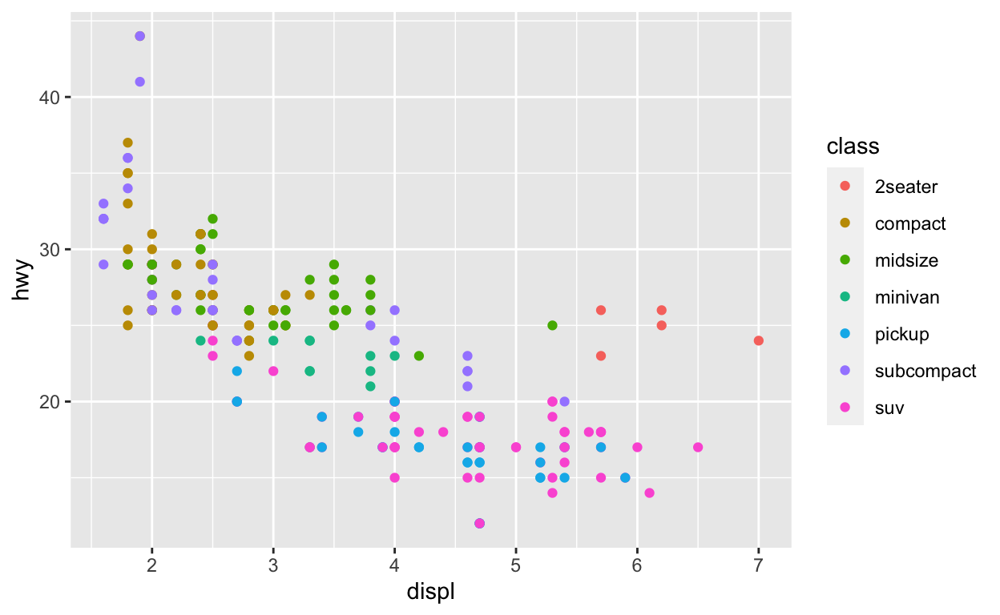

angela.zoss@duke.edu
RStudio Instructor Exam
2021-02-01
Sample Lesson: Aesthetics Mapping in ggplot2
An interactive version of this lesson is available.
Welcome back! In our previous lessons, you learned about the ggplot2 function that creates the visualization layer using a data frame (ggplot()), and you learned how to add a geometry layer using the + operator and a geometry function (e.g., geom_bar()).
ggplot(data = data_frame) +
geom_point()This gives you a basic plot template, but the plot isn’t complete until we tell it how we want to use the data.
Imagine the end result - a chart where data has been converted into a series of geometric objects with different visual properties (e.g., different positions, sizes, colors).

Now compare this end result to the original dataset.
What do you see that is common between the table and the plot?
Notice the labels that appear on the x axis, y axis, and color legend. They match column names from the dataset. Once we learn how to tell the plot what matches we want to use, our plot will be complete.
In ggplot2, matching dataset columns to plot components is called “mapping.” To make this mapping possible, ggplot2 has identified all of the possible plot components for all of the different kinds of geometry layers. These plot components are called visual properties or “aesthetics.”
There are two aesthetics that are so common they are almost universal: x and y. Other common aesthetics include: color, fill, size, alpha (which controls transparency), and group.
To create the mapping between aesthetics and columns, we need to create a series of statements in the form aesthetic = variable. ggplot2 has a special wrapper function that packages a list of these statements into a mapping: aes(). Inside this wrapper function, we can type column names without the name of the data frame and without using quotation marks.
Here is an example of how to list the individual aesthetic mappings within the wrapper function:
aes(x = displ, y = hwy)
To add a mapping statement to a plot, we insert it into the geometry layer function, passing it to the mapping argument.
Once you have mapped the required aesthetics, you can continue to add to the mapping list to bring more data into the chart. For example, we could map color to the class column.
Chart objects have many properties, and an effective visualization knows when to add more data and when to hold back. The aesthetics we don’t use for variables all have default values, like a default size for the points in our plot.
What if we have a basic plot where we have mapped x and y to variables, but we want to change the color of all of the points to some color other than black? We don’t want to use a mapping because the color isn’t stored in our data frame - it’s just a color we want to choose manually.
In ggplot2, we can assign custom values to any remaining aesthetics by passing them to the geometry layer like normal arguments - outside the aes() wrapping function.
Let’s start with a plot that has x and y mappings and try changing the color of the points to red.
# Hint: you can access common colors using their names as strings (e.g., "black", "red")Let’s try one more example. Map x to displ, y to hwy, and color to class. Then, as static assignments, update the size to 7 and the transparency (alpha) to .75.
Now let’s check our understanding with a few questions.
Complete the following questions to check your understanding.
Edit the code below to add the following aesthetics mapping to the plot geometry layer:
Click on “Run Code” to execute the code and “Solution” to check your solution.
Note: this dataset is large and the code may take a few seconds to execute.
ggplot(data = diamonds) +
geom_point()ggplot(data = diamonds) +
geom_point(mapping = aes(x = carat, y = price, color = clarity))
# or simplified
ggplot(data = diamonds) +
geom_point(aes(x = carat, y = price, color = clarity))